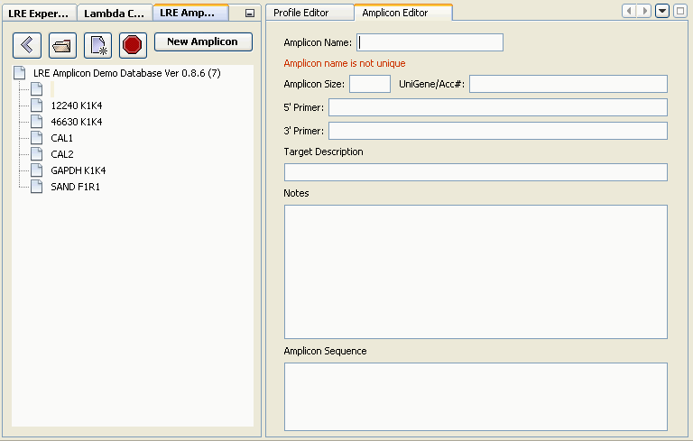

Amplicons within an amplicon database file (*.amp) are presented as a simple list based on name:
Selection of an amplicon in the explorer window triggers the amplicon editing window to present information about the amplicon, which can be editied
Amplicons can also be deleted from the database, by selecting an amplicon, right clicking the selected amplicon, and selecting the "Delete Amplicon(s)" option in the popup menu:
:
Note that multiple amplicons can be deleted by using selecting using either the Shift or Ctrl keys along with the mouse button:
IMPORTANT: Note that there is no undo function in this version of the LRE Analyzer, so once an amplicon is deleted there is no way to recovery it.
A new amplicon can be manually created by clicking on the "New Amplicon" button within the amplicon explorer window, which generates an empty form with the cursor placed into the Amplicon Name field of the amplicon editor:

Type in a unique name, along with the amplicon size, which are compulsory, in addition to with any other desired information:
Note that addition or editing of information is automatically save to disk. Note also that there is no undo function in this version of the LRE Analyzer.
See also:
Amplicon Import
Amplicon Export